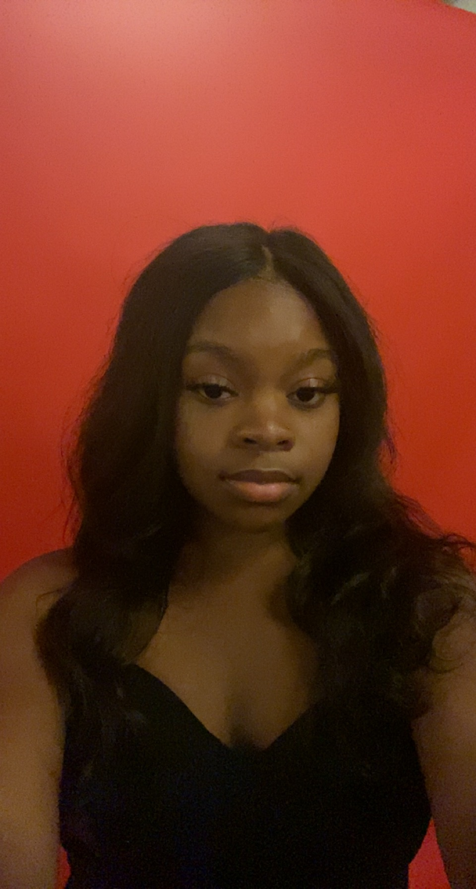

Welcome
Welcome to my personal portfolio website. I am interested in technology, digital strategy, project management, and creating professional online experiences. This site introduces who I am, what I am learning, and the types of work that interest me.

Featured
My focus is building strong communication, organization, and technical skills. I enjoy learning how websites are structured because it helps me better understand how design, content, and technology work together.